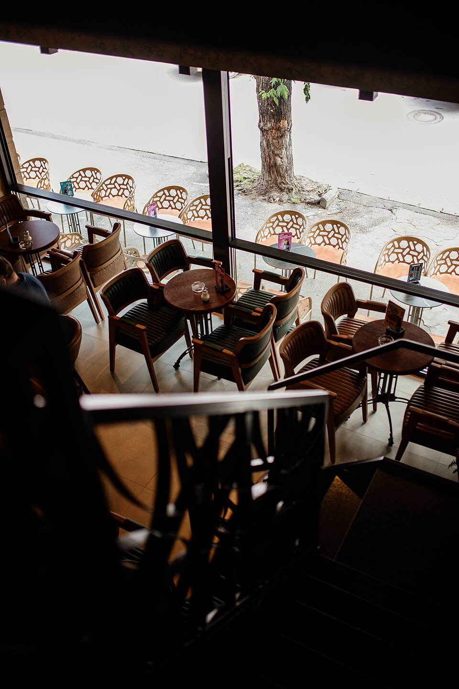

Artisan Coffee Culture on Alikhan Bokeikhan Street
Located at Alikhan Bokeikhan Street 10 in Astana, Coffi is an independent neighborhood coffeehouse founded to serve freshly roasted beans and homemade pastries. We provide a peaceful haven with thirty comfortable seats designed for university students, remote professionals, and neighborhood residents who appreciate genuine hospitality.

Our goal is brewing balanced specialty coffee at honest prices while maintaining a warm space where people can read and work,shared lead barista Madina Serikova on September 12, 2026.
Every single espresso shot is pulled at 93°C using fresh beans roasted in Kazakhstan. We pair our coffee with handmade bakery treats baked every morning before opening hours.